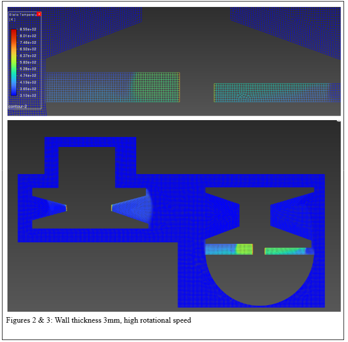

Packaging the drivetrain
I led 12 engineers on the 2026 Baja SAE powertrain. I owned the overall layout in SolidWorks and coordinated how the engine, continuously variable transmission (CVT), jackshaft, and chain drive fit together. The chassis set the space available. The belt and chain also needed room for their guards.
I compared gear ratios, chain selections, and shaft designs against the torque we wanted at the wheels and the space we had to build in. A ratio could work on paper and still put a sprocket or guard too close to the frame. I checked those choices in the vehicle assembly before we committed to fabrication.

| Gear stage | Driver teeth | Driven teeth | Reduction |
|---|---|---|---|
| First | 21 | 60 | 2.857∶1 |
| Second | 21 | 90 | 4.286∶1 |
Our worksheet gives a combined reduction of 12.245∶1 before accounting for the CVT. Open the original gear-ratio worksheet.

Building and inspecting the assembly
I coordinated machining, welding, and assembly with the manufacturing group. We used the capabilities of our own shop when we chose how to make the mounts and guards. At assembly, the team had to locate each shaft and sprocket so the chain ran in line within the available clearance.
I used our design failure mode and effects analysis (DFMEA) to write assembly and inspection procedures. Those procedures cut our pre-competition build time by about 15%.
Checking the design under load
Working with the validation team, I led a thermal and airflow study of the CVT housing. The question was whether the guard layout restricted cooling during sustained operation. We used the simulated flow and temperature patterns to identify areas to revise.


During endurance testing, I led root-cause investigations into at least five powertrain failures. I documented what failed, presented corrective actions to team leadership, and took those changes back into testing. The failure modes we corrected did not recur in subsequent testing.
Results on car 185
The drivetrain was about 12% lighter while maintaining a design safety factor of 2 under the competition load case. The safety factor comes from the design analysis. Our physical evidence came from the assembled vehicle, where endurance runs exposed failure modes that we could trace and correct.
Gearbox mount in design
For our next drivetrain layout, I’m designing the mount for an off-the-shelf gearbox. Once we got it shifting out of neutral, I could start reviewing its position relative to the engine, CVT casing, and frame.
Engine height and gearbox position
Lowering the engine could lower the vehicle’s center of gravity. Moving the gearbox rearward would make room, but it would also change the driveline geometry the dynamics team was using and could expose the gearbox beyond the frame. I raised both concerns during our layout review.

Ownership and next checks
I own the mount and its fit in the vehicle. Other powertrain members are developing gearbox concepts. I asked them to document their chosen ratios, gear arrangements, modules, and materials so we can review each design on the same terms.
Before we release the mount CAD, I’m checking clearances with the dynamics team and reviewing material and load assumptions with Simulation & Validation. Physical fit-up and testing are still pending for the mount.